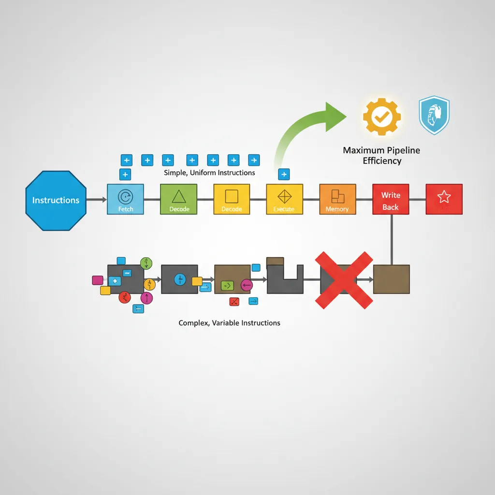
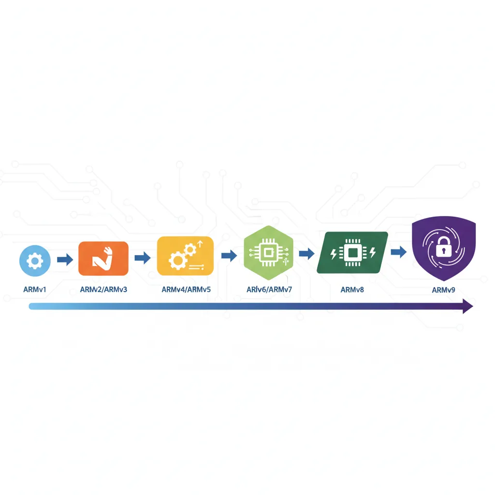
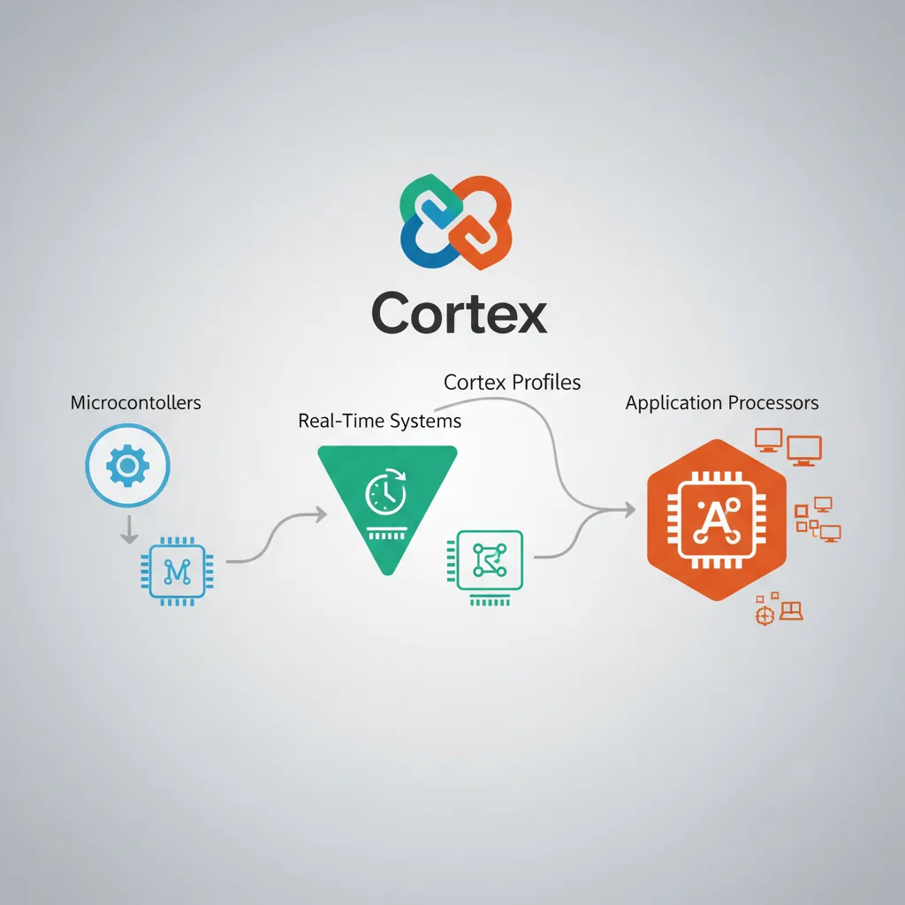
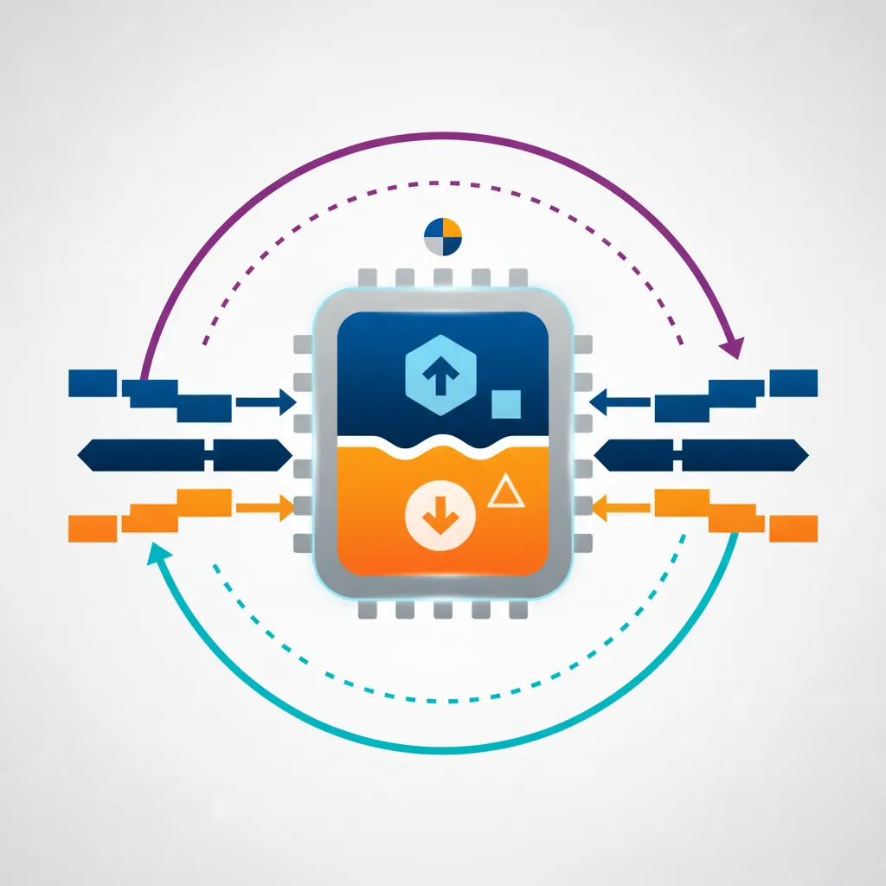

We use cookies to enhance your browsing experience, serve personalized content, and analyze our traffic.
By clicking “Accept All”, you consent to our use of cookies. See our
Privacy Policy
for more information.
ARM Assembly Part 1: Architecture History & Core Concepts
February 19, 2026Wasil Zafar18 min read
Explore ARM's evolutionary journey from ARMv1 to ARMv9, understand RISC design philosophy, discover the diverse ARM ecosystem with Cortex profiles, and master foundational concepts that underpin all ARM assembly programming.
Series Overview: This is Part 1 of our 28-part ARM Assembly Mastery Series. We'll journey from foundational architecture concepts through advanced OS development, kernel programming, reverse engineering, and cutting-edge ARMv9 features. Master ARM from instruction-level fundamentals to system architecture and real-world applications.
Every time you pick up a smartphone, tap your smartwatch, ask a voice assistant a question, or drive a modern car, you are interacting with an ARM processor. ARM (originally Acorn RISC Machine, later Advanced RISC Machines) is the most widely deployed processor architecture in human history, with over 250 billion chips shipped to date. Unlike Intel's x86 which dominates desktops and servers through direct chip manufacturing, ARM operates as an intellectual property (IP) licensing company — designing processor architectures that hundreds of companies then build into silicon.
This article is your gateway into understanding ARM at the deepest level. Whether you're an embedded engineer working with Cortex-M microcontrollers, a systems programmer targeting Linux on Cortex-A, or a security researcher analyzing ARM binaries, the foundational concepts covered here will serve as your bedrock throughout the entire 28-part series.

ARM's RISC design philosophy emphasises simple, uniform instructions for maximum pipeline efficiency
Why ARM Matters
ARM isn't just another processor architecture — it's the dominant one by volume. Consider these staggering numbers:
99% of smartphones run on ARM processors (Apple A-series, Qualcomm Snapdragon, Samsung Exynos)
95%+ of IoT devices use ARM-based microcontrollers
AWS Graviton, Ampere Altra, and Microsoft Cobalt are bringing ARM to cloud data centers
Apple Silicon (M1–M4) proved ARM can match or exceed x86 desktop/laptop performance
The world's fastest supercomputer, Fugaku, uses ARM-based A64FX processors
Key Insight: ARM's RISC design philosophy — doing more with simpler instructions — yields exceptional performance-per-watt. This energy efficiency has made ARM the default choice for battery-powered devices and is now disrupting the power-hungry data center market.
Analogy
The Restaurant Kitchen Analogy
Think of processor design like running a kitchen:
x86 (CISC) is like a chef who knows 1,500 recipes by heart. Each "instruction" (recipe) can be incredibly complex — "make béchamel sauce" is a single command that involves many sub-steps internally. The kitchen equipment is elaborate and expensive.
ARM (RISC) is like a team of cooks who each know only 200 simple techniques — "chop," "sauté," "stir," "plate." To make béchamel, they combine these simple steps. The kitchen is smaller, cheaper, and uses far less electricity. With good coordination, they match or exceed the fancy chef's output.
This simplicity-by-design is the core of RISC philosophy: fewer, simpler instructions that execute in predictable time, enabling aggressive pipelining and power efficiency.
RISC Design Philosophy
The RISC (Reduced Instruction Set Computer) vs. CISC (Complex Instruction Set Computer) debate has shaped processor design for four decades. Understanding these philosophies is essential for anyone writing assembly code.
CISC Philosophy (x86)
Intel's x86 architecture follows the CISC approach: provide the programmer with powerful, multi-step instructions. A single x86 instruction like REP MOVSB can copy an entire block of memory. The hardware handles the complexity internally.
RISC Philosophy (ARM)
ARM takes the opposite approach. The RISC design principles that ARM follows include:
RISC Principle
What It Means
ARM Implementation
Fixed-width instructions
Every instruction is the same size
32 bits (ARM mode) or 16/32 bits (Thumb-2)
Load/Store architecture
Only load/store instructions access memory; ALU works on registers only
LDR/STR for memory; ADD/SUB operate on registers
Large register file
Many general-purpose registers reduce memory accesses
16 registers (AArch32), 31 registers (AArch64)
Simple addressing modes
Limited, regular memory addressing patterns
Base + offset, base + register, pre/post-index
Single-cycle execution
Most instructions complete in one clock cycle
Pipeline designed for single-cycle throughput
Historical Note: The RISC concept originated in the 1980s from research at UC Berkeley (RISC-I) and Stanford (MIPS). Sophie Wilson and Steve Furber at Acorn Computers adopted these principles when designing the first ARM processor in 1985. The original ARM1 had only 25,000 transistors — compared to Intel's contemporary 80386 with 275,000.
Side-by-Side Comparison: The Same Task in x86 vs ARM
Adding two numbers from memory and storing the result:
// x86 (CISC) - can operate directly on memory
// ADD instruction reads from memory, adds, and writes back
add eax, [ebx] // One instruction: load + add in one step
mov [ecx], eax // Store result
// ARM (RISC) - load/store architecture, explicit steps
LDR R0, [R1] // Step 1: Load value from memory into register
ADD R0, R0, R2 // Step 2: Add registers (no memory access)
STR R0, [R3] // Step 3: Store result back to memory
ARM uses more instructions, but each one is simpler and faster. The pipeline can process these uniform instructions more efficiently, and the total execution time is often comparable or faster.
ARM Evolution: ARMv1 to ARMv9
ARM's journey from a skunkworks project at a British computer company to the world's most prolific processor architecture spans four decades of relentless innovation. Each generation built upon the last, adding capabilities while maintaining the core RISC efficiency that made ARM successful.

ARM architecture evolution from the original 25,000-transistor ARMv1 to the security-focused ARMv9
ARMv1–v3: The Foundations (1985–1992)
The ARM story begins at Acorn Computers in Cambridge, England. In 1983, Acorn needed a processor for their next-generation BBC Micro computer, but existing chips were too slow and expensive.
Case Study
The Birth of ARM: Acorn's Gamble
The Problem: Acorn Computers needed a 32-bit processor for their next BBC Micro. The Motorola 68000 was too expensive, and Intel's 80286 was too power-hungry.
The Solution: Engineers Sophie Wilson and Steve Furber designed their own processor from scratch, inspired by the Berkeley RISC papers. Wilson wrote the instruction set simulator in BBC BASIC in a single evening.
The Result: ARM1 (1985) worked correctly on the first silicon — an extraordinary achievement. It consumed only 0.1 watts (the 80286 consumed 3.5 watts) and could execute 4 MIPS at 8 MHz. The simplicity of RISC design had paid off spectacularly.
Legacy: This power efficiency DNA, established in the very first chip, would define ARM's advantage for the next four decades.
ARMv1 (1985): The original 32-bit RISC processor with 26-bit address space (64 MB addressable). Only used in prototypes.
ARMv2 (1987): Added multiply instructions and coprocessor support. Powered the Acorn Archimedes, one of the first ARM-based commercial computers.
ARMv3 (1992): Expanded to full 32-bit addressing (4 GB address space), added separate Program Status Register (CPSR/SPSR), and introduced the SWP atomic instruction for multiprocessor synchronization.
ARMv4–v6: Thumb & SIMD Emergence (1994–2002)
The mid-1990s brought ARM into the mobile revolution. ARM Ltd. was spun off from Acorn in 1990 as a joint venture with Apple (which used ARM in the Newton PDA) and VLSI Technology.
ARMv4 / ARM7TDMI (1994): The breakthrough chip. The "T" stands for Thumb — a 16-bit instruction set that compresses code to roughly 65% the size of ARM instructions while maintaining most of the performance. This was critical for memory-constrained devices. The ARM7TDMI became the best-selling ARM core of all time, found in the Nokia 6110, Game Boy Advance, and iPod.
ARMv5 (1997): Added DSP (Digital Signal Processing) extensions for multimedia codecs. Introduced the BLX instruction for smoother ARM/Thumb interworking. Enhanced the Jazelle extension for Java bytecode execution.
ARMv6 (2002): Introduced SIMD (Single Instruction Multiple Data) extensions for parallel data processing — process four 8-bit values simultaneously. Added TrustZone security technology, mixed-endian support, and the ARM1136 core that powered the original Raspberry Pi.
ARMv7: 32-bit Dominance (2004–2011)
ARMv7 is where ARM truly conquered mobile computing. This architecture introduced the three Cortex profiles that persist today and added NEON Advanced SIMD for multimedia processing.
Market Impact: By 2012, over 10 billion ARMv7-based chips had been shipped. The Cortex-A9 and Cortex-A15 powered virtually every flagship smartphone from Apple's iPhone 4S (A5 chip) to Samsung's Galaxy S3 (Exynos 4412).
Key ARMv7 innovations:
Thumb-2: A variable-length (16/32-bit) instruction set that combined the code density of Thumb with the performance of full ARM instructions. This became the primary instruction set for Cortex-M microcontrollers.
NEON: A 128-bit SIMD engine for accelerating multimedia, signal processing, and graphics. Think of it as processing a four-lane highway instead of a single-lane road.
VFPv3/v4: Hardware floating-point units following IEEE-754 standards.
big.LITTLE: ARM's first heterogeneous computing approach, pairing high-performance Cortex-A15 cores with power-efficient Cortex-A7 cores on the same die.
Virtualization Extensions: Hardware support for hypervisors, enabling multiple operating systems on a single chip.
ARMv8: 64-bit Revolution (2011–2020)
ARMv8-A was ARM's most dramatic architectural leap — introducing a completely new 64-bit instruction set called AArch64 while maintaining backward compatibility with 32-bit code through an AArch32 execution state.
Case Study
Apple A7: The 64-bit Shock
Context: In September 2013, Apple surprised the entire industry by shipping the A7 chip in the iPhone 5s — the world's first 64-bit ARM processor in a smartphone. Competitors were caught flat-footed.
Technical Impact: The move to AArch64 doubled the general-purpose registers from 16 to 31, enabled addressing of more than 4 GB RAM, and provided a clean new instruction set free of decades of legacy baggage.
Industry Reaction: Qualcomm and Samsung scrambled to release their own 64-bit ARM chips. Within two years, every flagship smartphone was 64-bit ARM.
Lesson: AArch64 wasn't just a wider data path — it was a fundamentally better ISA with more registers, cleaner encoding, and modern security features baked in.
Major ARMv8 features:
AArch64: 31 general-purpose 64-bit registers (vs. 16 in AArch32), new instruction encoding, SIMD as standard
ARMv9 is the current generation, building on ARMv8 with a focus on security, AI acceleration, and scalable vector processing for data centers and HPC.
Key ARMv9 additions:
Confidential Compute Architecture (CCA): Hardware-enforced Realms for isolating sensitive workloads, even from the OS or hypervisor
Memory Tagging Extension (MTE): Hardware-assisted memory safety that can detect use-after-free and buffer overflow bugs at runtime
Scalable Vector Extension 2 (SVE2): Variable-length vector processing (128–2048 bits) for HPC, AI, and DSP workloads
Scalable Matrix Extension (SME): Dedicated matrix operations for AI/ML inference and training
Enhanced security: Branch Record Buffer Extension (BRBE) for security profiling, enhanced PAC and BTI
Security First: ARMv9 makes security a hardware-level concern rather than an afterthought. MTE alone can prevent entire classes of memory corruption vulnerabilities that have plagued C/C++ software for decades. Google has deployed MTE on Pixel phones running on Cortex-X4 cores.
Version
Year
Key Feature
Landmark Product
ARMv1
1985
First RISC silicon
ARM1 prototype
ARMv4T
1994
Thumb instruction set
ARM7TDMI, GBA, iPod
ARMv6
2002
SIMD, TrustZone
ARM1136, Raspberry Pi 1
ARMv7-A
2004
Thumb-2, NEON, big.LITTLE
Cortex-A9, iPhone 4S
ARMv8-A
2011
AArch64 (64-bit), Crypto
Apple A7, AWS Graviton
ARMv9-A
2021
CCA, MTE, SVE2, SME
Cortex-X4, Dimensity 9300
ARM Ecosystem & Licensing
Understanding how ARM makes money is essential to understanding the ARM ecosystem. Unlike Intel or AMD, ARM does not manufacture any chips. Instead, it operates one of the most successful IP licensing businesses in technology history.
ARM's IP licensing model enables hundreds of companies to build custom chips from shared designs
ARM Corporation Model
Analogy
ARM as an Architecture Firm
Think of ARM like an architecture firm that designs blueprints for buildings (processor designs) but never builds the buildings themselves. Clients buy the blueprints and construct the buildings (chips) in their own factories (fabs). ARM earns revenue from:
Upfront license fee: A one-time fee (millions of dollars) to access the design
Per-chip royalty: A small fee (typically 1–2% of chip price) for every chip sold
This model means ARM's revenue scales directly with the global demand for silicon — the more chips shipped worldwide, the more ARM earns.
ARM offers several licensing tiers:
Processor License: Use ARM's pre-designed cores (Cortex-A78, Cortex-M4, etc.) as-is in your chip. Most common for companies that don't want to design their own cores.
Architecture License: Permission to design your own custom cores implementing the ARM ISA. Only the largest chip companies hold these licenses: Apple, Qualcomm, Samsung, Broadcom, Marvell, and a few others.
Flexible Access: A subscription model allowing experimentation with many ARM cores before committing to a license.
Major Licensees
The breadth of ARM's licensee ecosystem is staggering:
Company
License Type
Notable Chips
Market
Apple
Architecture
A17 Pro, M4
Phones, laptops, servers
Qualcomm
Architecture
Snapdragon 8 Gen 3
Android phones, PCs
Samsung
Architecture
Exynos 2400
Phones, IoT
AWS/Amazon
Processor
Graviton 4
Cloud servers
NVIDIA
Architecture
Grace CPU
AI/HPC servers
MediaTek
Processor
Dimensity 9300
Phones, IoT, autos
STMicroelectronics
Processor
STM32 series
Embedded/MCU
NXP
Processor
i.MX RT series
Automotive, industrial
Raspberry Pi
Processor
RP2040 (Cortex-M0+)
Education, maker
Cortex Profiles
Since ARMv7, ARM has organized its processor designs into three distinct profiles, each optimized for specific workloads. Think of them as three different vehicle types: motorcycles (M), rally cars (R), and luxury sedans (A).

The three Cortex profiles target distinct domains: microcontrollers, real-time systems, and application processors
Cortex-M (Microcontroller)
The Cortex-M family is designed for deeply embedded systems where cost, power, and real-time determinism are critical. These processors run bare-metal firmware or lightweight RTOS (Real-Time Operating Systems) like FreeRTOS or Zephyr.
Pipeline: 2–8 stages (simple, deterministic)
ISA: Thumb-2 only (no ARM mode) — code-efficient, lower gate count
No MMU: Optional MPU (Memory Protection Unit) instead
Interrupt handling: Hardware-automated NVIC (Nested Vectored Interrupt Controller) with tail-chaining
Fitness trackers: Cortex-M0+ in heart rate monitors (Nordic nRF52)
Industrial sensors: Cortex-M4 in vibration monitoring
Motor control: Cortex-M7 in electric vehicle inverters (STM32H7)
AI at the edge: Cortex-M55 + Ethos-U55 in keyword spotting, anomaly detection
Maker boards: Raspberry Pi Pico (RP2040) with dual Cortex-M0+
Cortex-R (Realtime)
The Cortex-R family targets applications requiring hard real-time guarantees — where missing a deadline could be catastrophic. These sit between the simplicity of Cortex-M and the complexity of Cortex-A.
ARMv8 introduced the concept of execution states. A single processor can operate in two fundamentally different modes, each with its own instruction set, register model, and exception handling.

ARMv8 introduced dual execution states allowing 32-bit and 64-bit code on the same processor
AArch32 (32-bit ARM)
AArch32 is the legacy 32-bit execution state, backward-compatible with ARMv7 and earlier:
Registers: 16 general-purpose 32-bit registers (R0–R15), including PC (R15), SP (R13), LR (R14)
Instruction sets: ARM (32-bit fixed), Thumb (16-bit compact), Thumb-2 (mixed 16/32-bit)
Condition codes: Most instructions can be conditionally executed using 4-bit condition field
// AArch64 example: Same logic, different style
CMP X0, #10 // Compare X0 with 10
CINC X1, X1, GT // Conditional increment: X1++ if GT
CSUB X1, X1, #1 // (Pseudo) - actually use CSEL pattern:
// Real AArch64 approach:
CMP X0, #10
ADD X2, X1, #1 // Compute X1 + 1
SUB X3, X1, #1 // Compute X1 - 1
CSEL X1, X2, X3, GT // Select: X1 = (GT) ? X2 : X3
Key Difference: AArch32 uses condition codes on individual instructions (ADDGT, SUBLE). AArch64 uses conditional select instructions (CSEL, CSINC) to branchlessly choose between pre-computed results. This design is more pipeline-friendly and avoids branch misprediction penalties.
Core Concepts Primer
Before diving into instruction details in the following parts, let's establish several foundational concepts that ARM assembly programmers encounter constantly.
Endianness Modes
Endianness refers to the byte order in which multi-byte data is stored in memory. Consider the 32-bit value 0x12345678:
Mode
Address +0
Address +1
Address +2
Address +3
Little-endian
0x78
0x56
0x34
0x12
Big-endian
0x12
0x34
0x56
0x78
Important: ARM supports both little-endian (LE) and big-endian (BE) modes. Little-endian is the default and is used by virtually all modern ARM systems (Android, iOS, Linux, Windows on ARM). Big-endian is rare but used in some network equipment and legacy systems. AArch64 also supports mixed-endian mode for data accesses.
// Check endianness in AArch64 by reading SCTLR_EL1
MRS X0, SCTLR_EL1 // Read System Control Register
AND X0, X0, #(1 << 25) // Check EE bit (bit 25)
// If X0 == 0, data accesses are little-endian
// If X0 != 0, data accesses are big-endian
Privilege Levels
ARM processors use Exception Levels (EL0–EL3) to control what software can do. Think of it as a building with four floors, where higher floors have more access:
Analogy
The Building Security Analogy
EL0 (Ground Floor): User applications — can only access their own rooms (memory). No special permissions. Your web browser, text editor, games run here.
EL1 (Second Floor): OS kernel — has keys to all user rooms, can configure memory permissions, handle interrupts. Linux kernel, Windows kernel run here.
EL2 (Third Floor): Hypervisor — manages multiple OSes, controls hardware access between VMs. KVM, Xen run here.
EL3 (Penthouse): Secure Monitor — controls transitions between Secure and Non-secure worlds (TrustZone). ARM Trusted Firmware (TF-A) runs here.
Transitions between levels occur through exceptions (interrupts, system calls, page faults). Software at EL0 can request kernel services via the SVC (Supervisor Call) instruction, which transitions to EL1.
// System call from EL0 to EL1 (AArch64 Linux)
MOV X8, #64 // Syscall number for write()
MOV X0, #1 // File descriptor: stdout
LDR X1, =message // Buffer address
MOV X2, #13 // Length
SVC #0 // Trigger exception → EL1 kernel handler
Pipeline Basics
A processor pipeline is like an assembly line in a factory. Instead of completing one instruction fully before starting the next, the processor overlaps multiple instructions at different stages of execution.
The classic ARM pipeline (ARM7TDMI) had just 3 stages:
Clock: 1 2 3 4 5 6
┌────┬────┬────┐
Instr 1: │ F │ D │ E │
└────┴┬───┴┬───┘
Instr 2: │ F │ D │ E │
└────┴┬───┴┬───┘
Instr 3: │ F │ D │ E │
└────┴────┴────┘
F = Fetch (get instruction from memory)
D = Decode (figure out what instruction does)
E = Execute (perform the operation)
Modern Cortex-A cores have 11–17+ pipeline stages with out-of-order execution, allowing multiple instructions to enter and complete simultaneously. The Cortex-X4, for example, can dispatch up to 10 operations per cycle across its execution units.
Pipeline Hazard: When one instruction depends on the result of a previous instruction still in the pipeline, a data hazard occurs. ARM mitigates this through register forwarding (bypassing), but understanding hazards is essential for writing fast assembly code. We'll cover this in depth in Part 18: Performance Profiling.
Instruction Encoding
Every ARM instruction is encoded as a fixed-width binary word. Understanding encoding helps with debugging, reverse engineering, and appreciating design constraints.
# Verify with an assembler (on an ARM system or cross-assembler):
echo "ADDS R1, R2, R3" | arm-none-eabi-as -o test.o -
arm-none-eabi-objdump -d test.o
# Output: e0921003 adds r1, r2, r3
ARM Reference Manuals Navigation
ARM publishes comprehensive documentation through the ARM Architecture Reference Manual (ARM ARM). Here's how to navigate the key references:
Document
Content
When to Use
ARM ARM (DDI 0487)
Complete ISA specification, all encodings
Authoritative instruction reference
Cortex-A TRM
Specific core implementation details
Core-specific features, pipeline details
AMBA/AXI spec
Bus interconnect protocols
Memory system, DMA design
AAPCS/PCS
Procedure Call Standard
Calling conventions, ABI compliance
GIC specification
Generic Interrupt Controller
Interrupt configuration
Pro Tip: All ARM reference manuals are freely available at developer.arm.com/documentation. The ARM Architecture Reference Manual for ARMv8/v9 (DDI 0487) is over 12,000 pages. Don't read it cover-to-cover — use the table of contents and search function to look up specific instructions, system registers, or translation table formats as needed.
Exercises & Practice
Exercise 1
RISC vs CISC Analysis
Consider a task that copies 16 bytes from one memory location to another:
Write pseudo-assembly for x86 using REP MOVSB (1 instruction)
Write the ARM AArch64 equivalent using LDP/STP pairs
Compare the instruction count vs. the total cycles (assume 1 cycle per ARM instruction, the x86 micro-ops internally expand to ~5 operations)
Exercise 2
Instruction Encoding Practice
Manually encode the following AArch32 instruction to hexadecimal:
MOVEQ R5, R3 // Move R3 to R5, only if Zero flag is set
Hints:
EQ condition code = 0000
MOV opcode = 1101
S bit = 0 (no flag setting)
Rd = R5 (0101), Rm = R3 (0011)
Answer: Work through the encoding format from the Instruction Encoding section above.
Exercise 3
Cortex Profile Selection
For each application, choose the most appropriate Cortex profile (M, R, or A) and justify your choice:
A battery-powered temperature sensor that transmits data via Bluetooth every minute
An anti-lock braking system (ABS) controller in a car
A tablet computer running Android
A hard drive controller managing read/write queues
A smart thermostat with a touchscreen UI
ARM ISA Reference Card Generator
Use this tool to generate a personalized ARM ISA quick reference card documenting the architecture, key instructions, registers, and addressing modes you want to reference. Download as Word, Excel, or PDF.
ARM ISA Quick Reference Card Generator
Create your personalized ARM reference card. Download as Word, Excel, or PDF.
Draft auto-saved
All data stays in your browser. Nothing is sent to or stored on any server.
Conclusion & Next Steps
In this foundational article, we've traced ARM's remarkable journey from a skunkworks project at Acorn Computers in 1985 to the world's most widely deployed processor architecture. You now understand:
The RISC design philosophy that gives ARM its efficiency advantage over x86 CISC
The evolutionary arc from ARMv1's 25,000 transistors to ARMv9's confidential compute and scalable vectors
ARM's unique IP licensing model that enables hundreds of companies to build ARM chips
The three Cortex profiles (M, R, A) and when to use each
AArch32 vs AArch64 execution states and their fundamental design differences
Core concepts: endianness, exception levels, pipeline basics, and instruction encoding
With this foundation established, you're ready to get hands-on with actual instruction sets. In Part 2, we'll dive deep into the ARM32 (AArch32) instruction set — the architecture that powered a decade of smartphones and still runs on billions of embedded devices today.
Related Articles in This Series
Part 2: ARM32 Instruction Set Fundamentals
Master ARM vs Thumb modes, register model, conditional execution, and immediate encoding.